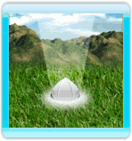
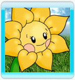

Quando giochi in Modalità Avventura, Follie esplora
Elilia - il misterioso pianeta dove ha eseguito un atterraggio di fortuna.
Guida Follie nelle zone evidenziate puntando il telecomando Wii sullo schermo e premento il pulsante A. Se Follie non può raggiungere una zona, il cursore diventerà rosso.
Durante l'esplorazione, Follie incontrerà diversi oggetti, personaggi e luoghi:
- Semi di Flowerwork :

Questi semi si sono sparsi durante l'atterraggio di fortuna. Raccoglili per piantare i fiori di Flowerwork nei luoghi di semina e potrai accedere ad un nuovo livello.
Quando Follie completa un nuovo livello, viene ricompensata con semi aggiuntivi.
- Luoghi di Semina:
Ognuno di questi luoghi luccicanti rappresenta un nuovo livello.
Prima che un livello possa essere giocato per la prima volta, il giocatore deve ottenere i semi giusti. Spostati sopra un luogo di semina per scoprire di quali semi hai bisogno.
Una volta che un livello viene completato, può essere rigiocato ancora (non hai bisogno di semi extra). Un livello completato premia il giocatore con nuovi semi e con un voto in stelle, da 1 a 5.
- Nani da Giardino:

Questi nani da giardino bloccano Follie durante l'esplorazione.
Follie usa il suo Star Power per ammansirli, in modo da poter passare. Il valore indicato su ogni nano da giardino indica la quantità minima di Star Power di cui Follie ha bisogno per ammansirlo.
Avvicinati ad un nano per iniziare ad ammansirlo.
- Consigli:

Durante l'esplorazione Follie troverà indizi e cartelli che forniranno strategie e consigli per il gioco, rivelando inoltre la storia e i segreti del pianeta Elilia.
I giocatori esperti possono disattivare i suggerimenti dal menu opzioni.
- Abitanti:
Follie occasionalmente si imbatterà negli abitanti di Elilia. Offriranno a Follie consigli insestimabili, e potranno venderle una nuova abilità (in cambio di monete).
Fermati di fronte ad un abitante per parlargli.
- Monete:
Raccogli le monete sparse in giro per il mondo camminandoci sopra.
Se incontri un abitante di Elilia, potrebbe offrirti una nuova abilità in cambio di monete.